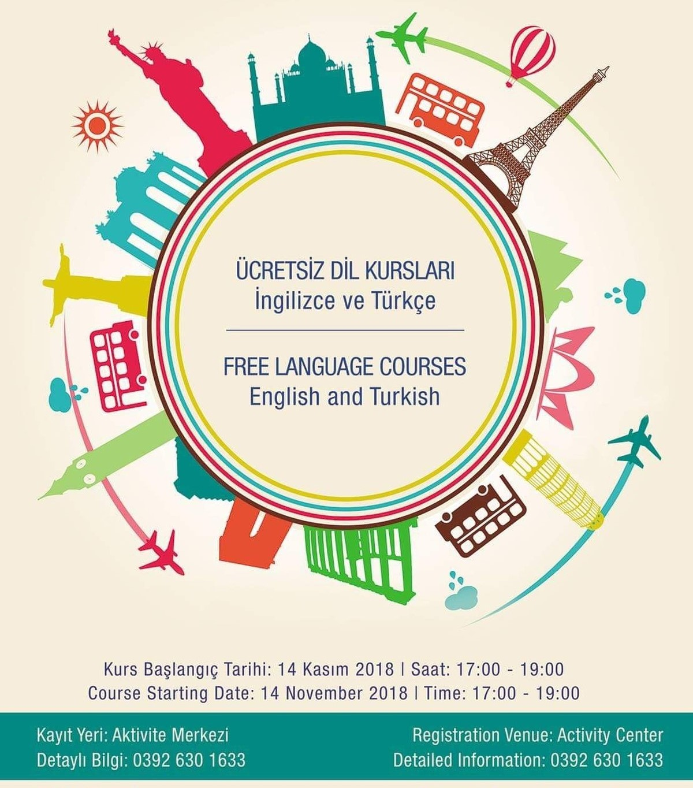
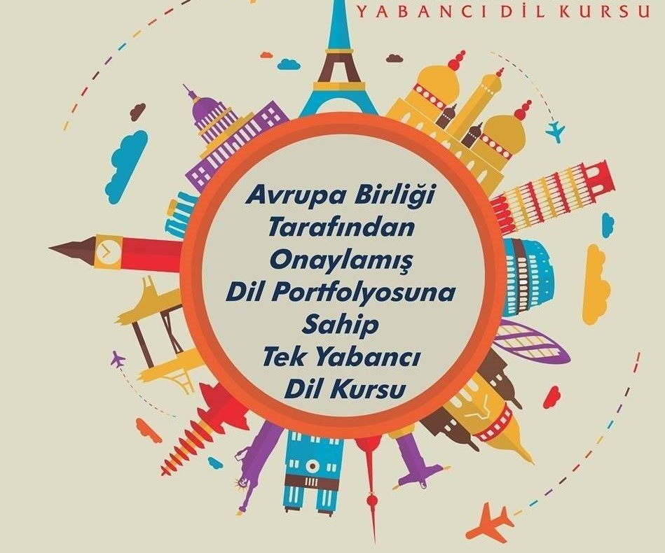
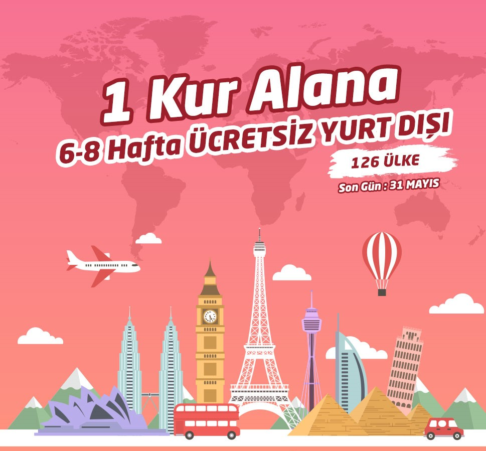
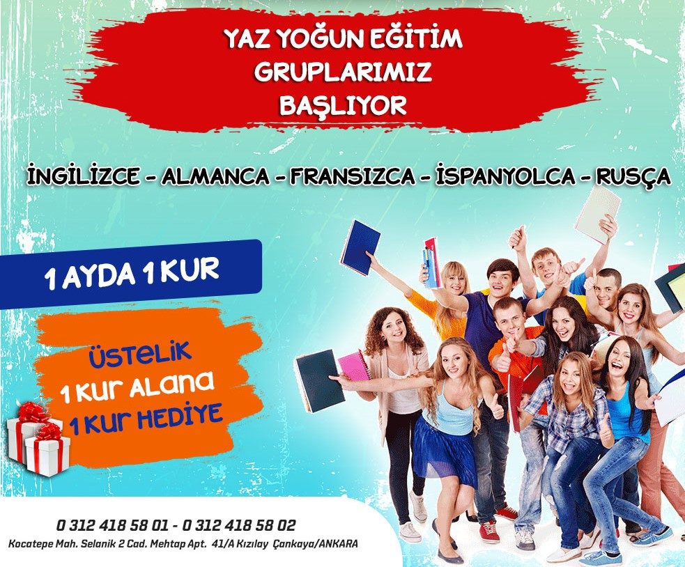
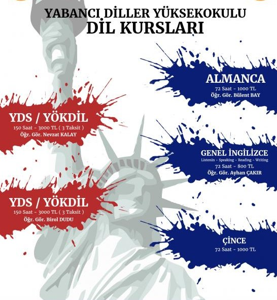

LUCY Foreign Languages


Vizyonumuz
NEDEN LUCY?
Ve işte size LUCY‘İ seçmeniz için birkaç neden!!!!!!!! İşte size LUCY'i seçmeniz için birkaç neden.Yılın En İyi Dil Okulu. (TURKİYE, KKTC Yılın Enleri Başarı Ödülü) Yılın En İyi Dil Okulu. (TURKİYE, KKTC Yılın Enleri Başarı Ödülü) En İyi Dil Okulu. (AVRUPA BAŞARI ÖDÜLÜ) Başarı garantisi ve Ücretsiz seviye tekrarı (ÖĞRENME GARANTİLİ EĞİTİM) Ücretsiz birebir telafi dersleri (make-up club) Yabancı Öğretmenlerle konuşma kulüpleri (speaking club) Sınırsız Gramer club ‘lar Vocabulary club Reading club Business English club Sesli ve görüntülü eğitim materyalleri (akıllı tahta yazılımları) Eğitime istediğin an ara verme ve tekrar başlama imkanı Ücretsiz seviye tespit sınavı Uzman Türk ve Yabancı öğretmen kadrosu Ücretsiz fotokopi paketleri Maximum 16 kişilik sınıflar İhtiyaçlarınıza göre düzenlenmiş dinlenme salonlarımız. Temiz, ferah, aydınlık, klimalı ve akıllı tahtalarla donatılmış sınıflar Her seviye için 50 çeşit okuma kitabı Herkese, her yaşta, her düzeyde eğitim imkânı Kişiye özel ödeme seçenekler.
- 
- 
- 
- 